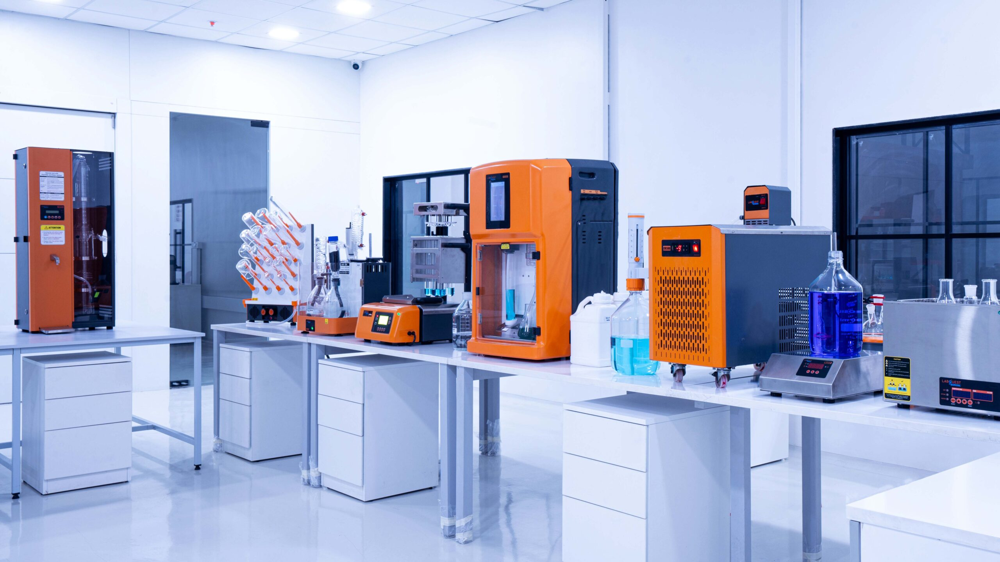

Mr Sanjay Bhalke
Nat. Sales Mgr, Instrumentation
Borosil Scientific
Borosil Scientific
A two-day intensive on the BOOST analytical suite. Learn protein nitrogen, fat extraction and total dietary fibre workflows from sample prep to AOAC-compliant reporting.

Two days. Three instruments. One workflow that takes you from a raw food sample to a defensible nutrient label. You will run real samples on Kjeldahl, Soxhlet and a dietary fibre rig, not watch slides.
Who should attend: UG Nutrition (Honours) students of Belda College, 1st, 2nd and 3rd Year, who want first-hand exposure to AOAC-aligned analytical workflows on Borosil instruments. Teachers and PhD scholars: please use the main portal.
Three Borosil analytical platforms. Real samples, real workflows, AOAC-aligned protocols.

Smart, in-built application library for Kjeldahl Nitrogen analysis: protein in milk & dairy, food, feed, grains, cereals, oilseeds, meat and beverage matrices.

Six-station automated extraction unit. Boil, rinse and recover solvent in three steps. Roughly twice the throughput of the classical Soxhlet apparatus, with comparable AOAC-grade results.

Fiber Bag Technology for crude fibre, NDF, ADF and dietary-fibre fractionation. Faster digestion cycles than the open-tube method, with cleaner gravimetric end-points.
Instruments shown are from Borosil Scientific and are used here for training reference; product photographs © Borosil.
| Session | Day 1 · 18 May | Day 2 · 19 May |
|---|---|---|
| 09:30-10:00 | Registration & safety briefing | Recap & lipids theory |
| 10:00-13:00 | Kjeldahl: theory + sample digestion | Soxhlet (Randall): fat extraction run |
| 13:00-14:00 | Break (own arrangements) | Break (own arrangements) |
| 14:00-16:00 | Distillation, titration & calculation | Dietary fibre (AOAC 991.43) |
| 16:00-17:00 | QC, calibration & calculation drill | Reporting workshop & certificates |